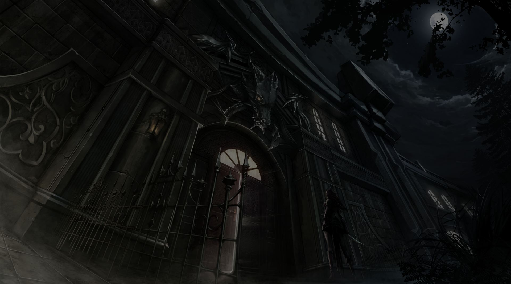
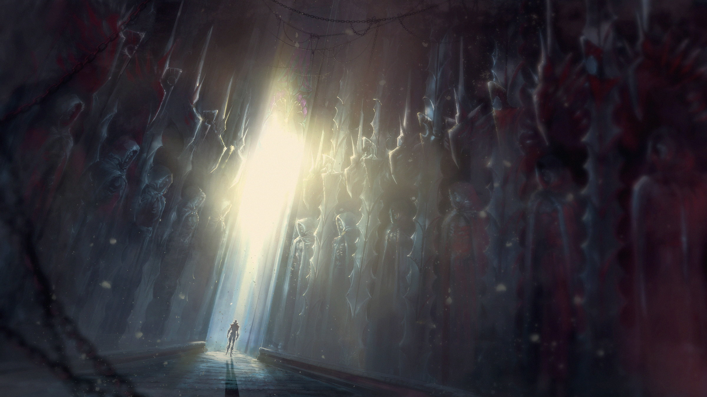
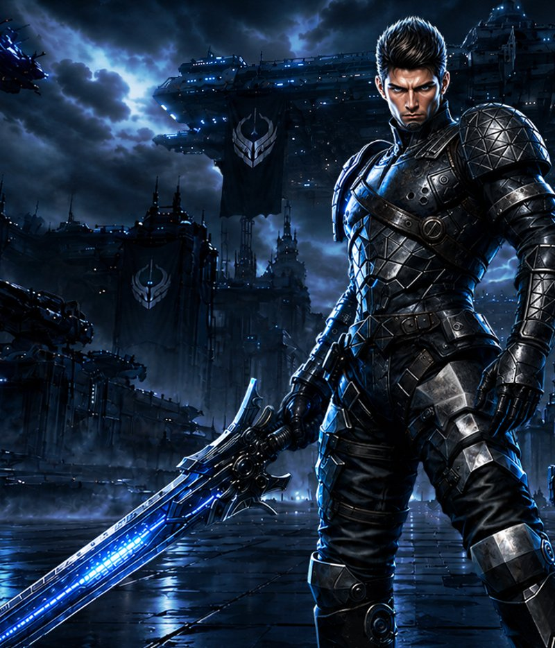
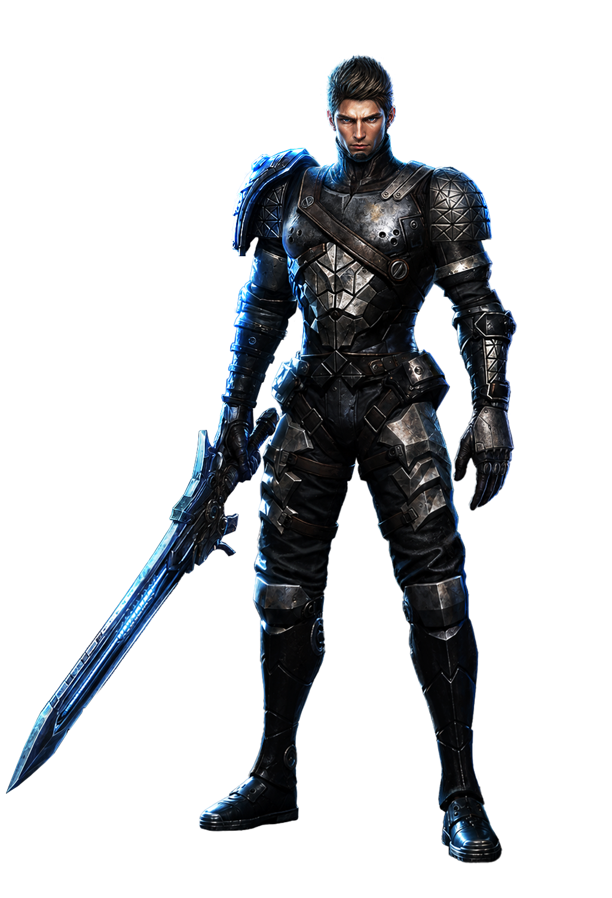

사전예약에 참여한 종족 비율입니다. 1분마다 갱신됩니다
집계 중입니다
집계 중입니다. 참여가 모이면 공개됩니다.

보상 4종은 휴대폰 사전예약을 완료하신 분께 출시 후 게임 내 우편으로 드립니다
1종족 선택
휴대폰 사전예약 완료 시 보상 4종 전원 지급!
휴대폰 사전예약을 마치셨다면 스토어에서도 예약해 두세요
개조 재료 상자 ×20 · 보석 상자 ×5
· 모든 보상은 확정 지급이며 뽑기가 아닙니다. · 사전예약 전용 보상은 출시 후 게임 내 우편으로 드립니다.
· 인증한 휴대폰 번호 1개당 1회 참여할 수 있습니다. · 개인정보는 사전예약 안내 목적으로만 사용하며 목적 달성 후 파기합니다.
· 문자 발송은 위탁 업체가 대행하며, 업체명은 페이지 하단에 표기합니다. 사전예약 유의사항 전문
종족은 선택하지 않아도 참여할 수 있으며, 사전예약 집계용으로 게임 내 선택과는 무관합니다.

매주 응모하고 경품을 받아가세요! 당첨자는 매주 수요일 18시에 개별 안내드립니다.
{{경품명}} {{수량}}명 추첨!
{{경품명}} {{수량}}명 추첨!
{{경품명}} {{수량}}명 추첨!
{{경품명}} {{수량}}명 추첨!
{{경품명}} {{수량}}명 추첨!
{{경품명}} {{수량}}명 추첨!
· 주차별 1회 응모할 수 있습니다. 이벤트 유의사항
신이 빛을 거둔 그날부터, 에슬라니아의 밤은 끝나지 않았다

신은 에덴에 낙원을 만들고 아담과 릴리스를 그곳에 두었다. 낙원에는 금단의 열매에 손대지 않는다는 규칙 하나가 있었지만, 릴리스는 기어이 그 열매를 찾아냈고 창조의 이치를 깨달았다.

릴리스는 열두 개의 형상을 빚어 하나하나에 생명을 불어넣었다. 신은 크게 노해 그들을 낙원 밖으로 내쫓고 빛의 축복마저 거두었다. 빛을 잃은 그들에게는 밤만이 남았다.

신은 아담에게 이브를 보냈고, 두 사람은 카인과 아벨을 낳았다. 이를 시기한 릴리스는 카인을 꾀어 아벨을 해치게 만들었다. 이 일을 알게 된 이브가 릴리스와 맞붙었으나 두 사람 모두 목숨을 잃었고, 릴리스는 영혼만 남은 채 흩어졌다.

절망한 아담은 릴리스의 영혼을 거두어 에덴 안에 가두었다. 그리고 자기 자신을 열쇠로 삼아 에덴의 문을 영원히 잠갔다. 그 뒤로 수백 년 동안 아무도 그 문을 열지 못했다.

어느 날 밤, 뱀파이어 마스터들이 아담의 봉인 앞에 나타났다. 그들이 아담의 힘을 깨뜨리자 거대한 에너지가 터져 나왔고, 에슬라니아 전역에 결계가 내려앉았다. 그날 이후 이 땅에서 빠져나갈 길은 사라졌다.

여러 나라가 조사단과 진압단을 들여보냈지만 살아 나온 사람은 없었다. 한 남자가 오랜 노력 끝에 뱀파이어 말살 조직 E.V.E를 세웠고, 그가 길러 낸 슬레이어들이 처음으로 결계 안에 들어섰다. 릴리스의 힘을 차지하려는 뱀파이어 마스터들과 그들을 막으려는 슬레이어들이 같은 땅에서 부딪치기 시작했다. 에슬라니아의 하늘은 그날부터 핏빛이다.
한 명씩은 약하지만, 네 직업이 서로의 빈자리를 메웁니다

도와 대검으로 전선을 여는 근접 딜러
도와 대검을 함께 쓰며 적과 가장 가까운 자리에서 싸웁니다. 먼저 부딪쳐 적을 붙잡아 두는 동안 뒤쪽 세 직업이 공격을 준비합니다.
1 / 4